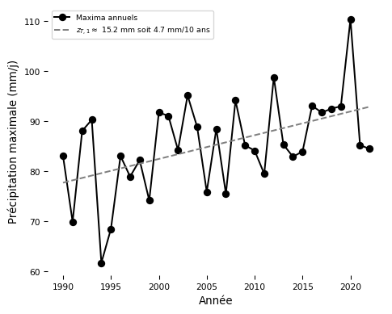

Caractérisation et évolution des précipitations extrêmes horaires en France à partir d’un modèle régional de climat à convection profonde résolue
—
Nombre de jour de pluie moyen
de 1959 à 2022 (Saison : année hydrologique | Echelle : quotidien)
jours

165.08
153.29
141.50
129.71
117.91
106.12
94.33
82.54
70.75
58.96
47.17
35.37
23.58
11.79
0.00
r² = 0.849 | ME = 10.823 | n = 1353 (Tx NaN ≤ 0.15)
Δ (AROME - Stations) : +10.8 jours (+9.7%)
Tendance à déclencher des jours de pluie plus fréquemment que ce qui est observé
Cumul des précipitations
de 1959 à 2022 (Saison : année hydrologique | Echelle : quotidien)
mm/j
5.99
5.57
5.14
4.71
4.28
3.85
3.42
3.00
2.57
2.14
1.71
1.28
0.86
0.43
0.00
r² = 0.890 | ME = 0.033 | n = 1353 (Tx NaN ≤ 0.15)
Δ (AROME - Stations) : +0.033 mm/j (+1.3%)
Δ (AROME - Stations) de 1990 à 2022 : -0.065 mm/j (-2.6%)
Répartition correcte de la quantité totale d’eau
Cumul des précipitations
de 1990 à 2022 (Saison : année hydrologique | Echelle : horaire)
mm/h
0.24
0.22
0.21
0.19
0.17
0.15
0.14
0.12
0.10
0.09
0.07
0.05
0.03
0.02
0.00
r² = 0.793 | ME = 0.002 | n = 383 (Tx NaN ≤ 0.15)
Δ (AROME - Stations) : +0.002 mm/h (+2.6%)
Résultat semblable
Pluies plus fréquentes en plus faibles quantités

Changement du niveau de retour 10 ans par 10 ans
de 1959 à 2022 (Saison : automne | Echelle : quotidien)
mm/j/10 ans

28.43
24.37
20.30
16.24
12.18
8.12
4.06
0.00
-4.06
-8.12
-12.18
-16.24
-20.30
-24.37
-28.43